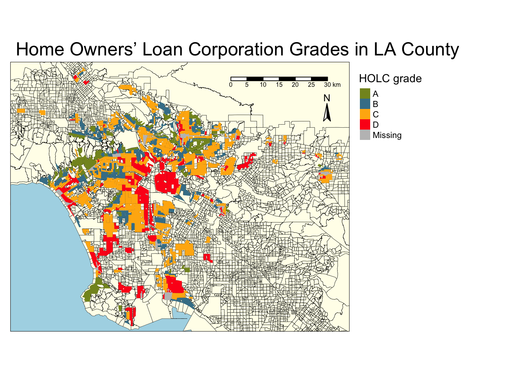
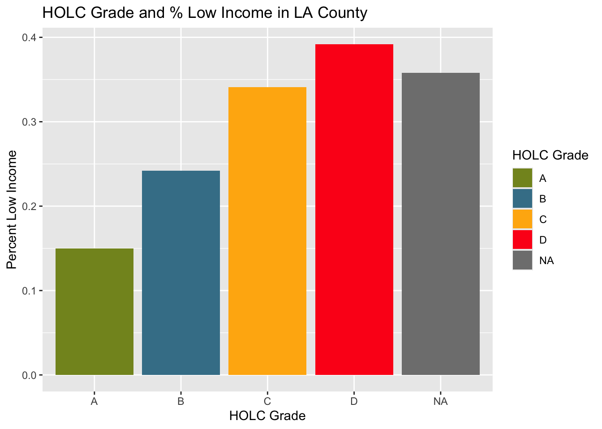
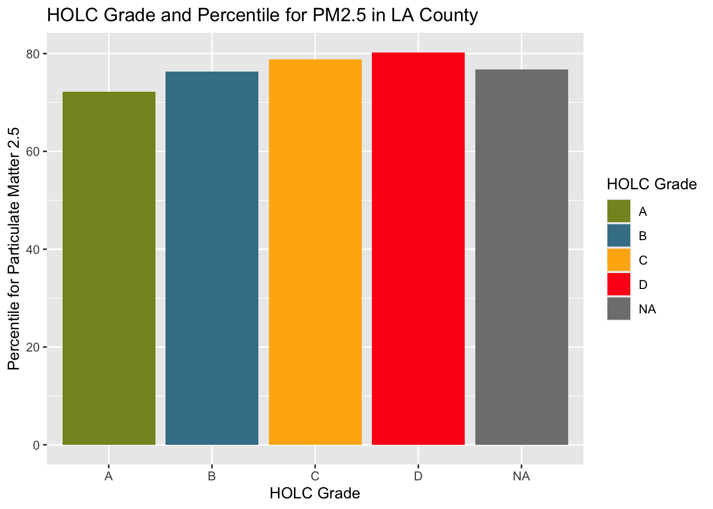
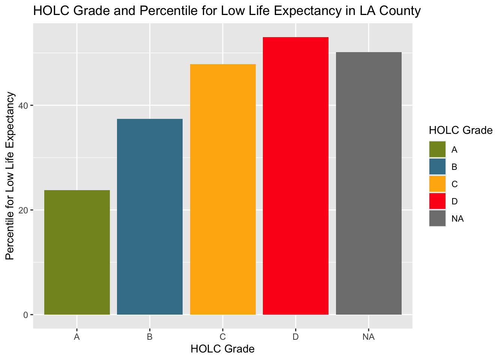
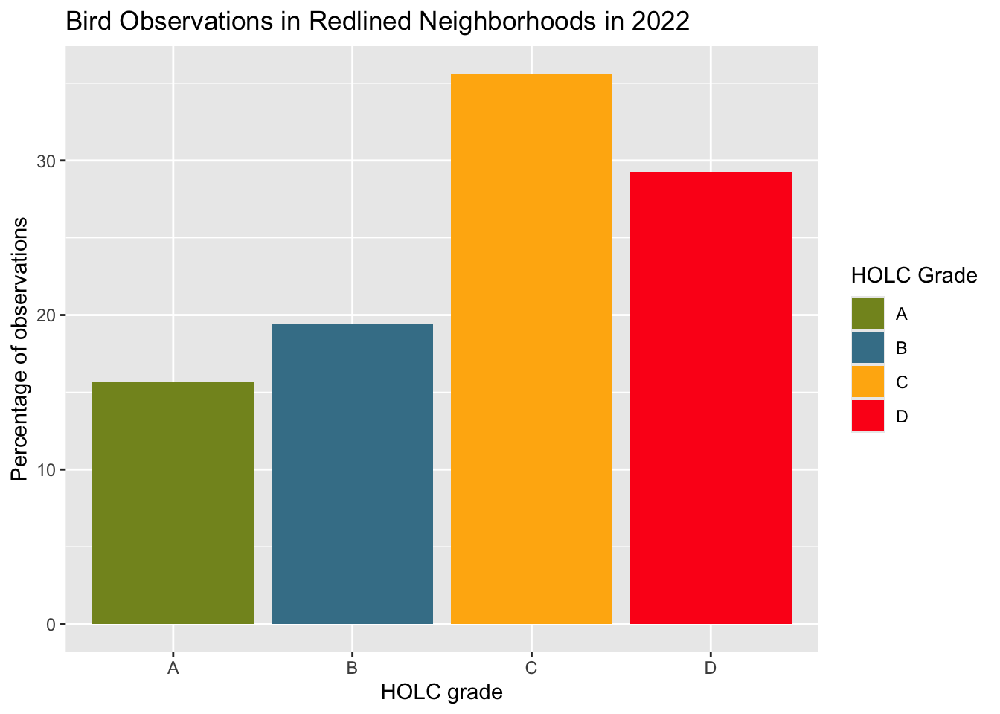
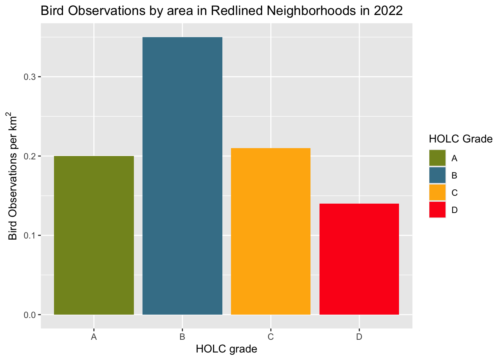

Show the code
# Load libraries
library(tidyverse)
library(here)
library(tmap)
library(sf)
library(dplyr)
library(kableExtra)
library(testthat)December 7, 2024
More content available at the github repository
Redlining refers to a practice by the Home Owners’ Loan Corporation(HOLC) that dates back to the 1930’s. The HOLC would rate neighborhoods (A - green, B - blue, C- yellow, or D - red) by “residential security” in various American cities. These ratings were often based on racial segregation and would then block access to loans for homeowners (Gee, G.C. ). In this analysis we will explore the effects of redlining on health, economy, and environment today.
Here, we will create a map showing the various HOLC grades in LA counties. We will then use visualizations to summarize the current conditions of these counties based on the variables percent low income, percentile for Particulate Matter 2.5, and percentile for low life expectancy. We will use the mean value in each county for these visualizations
# Filter ej data so ID in water is not showing
ej <- ej %>%
filter(ID != "060379903000" & ID != "060379902000")
# Filter ej data to just LA
la_ej <- ej %>%
filter(CNTY_NAME %in% c("Los Angeles County"))
# Warning and transformation if coordinate reference systems do not match
if(st_crs(la_ej) != st_crs(la_red)){
print(warning("updating coordinate reference systems to match"))
la_red <- st_transform(la_red, crs = st_crs(la_ej))
}[1] "updating coordinate reference systems to match"# Map making
tm_shape(ej, bbox = la_red) + # Base map and set bounding box to redline data
tm_polygons(col = "#FFFEEB",
border.col = "black",
lwd = 0.3) +
tm_shape(la_red) +
tm_fill("grade",
title = "HOLC grade",
palette = c("#849324","#437F97", "#FFB30F", "#FD151B")) +
tm_scale_bar(position = c("right", "top")) +
tm_compass(position = c("right", "top"),
size = 1.5,
text.size = 0.8) +
tm_layout(main.title = "Home Owners’ Loan Corporation Grades in LA County",
main.title.position = c("left", "top"),
legend.outside = TRUE,
bg.color = "lightblue")
# Census block groups within all HOLC
# Join using st_intersects which encompasses all the spatial intersect relationships, and used left=FALSE for an inner join. An inner join will return records that spatially match
red_cbg <- st_join(la_ej, la_red, join = st_intersects, left = FALSE)
# Create table with percentages for each HOLC grade
percent_holc <- red_cbg %>%
group_by(grade) %>%
summarise(count = n()) %>%
mutate(percent = round((count / sum(count))*100, 2)) %>%
select(-count) %>%
st_drop_geometry()
# Use testthat package to make sure all percents add to 100
expect_equal(sum(percent_holc$percent), 100)
# Create table
kable(percent_holc, caption = "Percent of current census block groups within each HOLC grade")| grade | percent |
|---|---|
| A | 7.03 |
| B | 19.40 |
| C | 47.87 |
| D | 21.07 |
| NA | 4.63 |
# Table with means for 3 given variables
holc_ej_means <- red_cbg %>%
group_by(grade) %>%
summarise(lowincpct = mean(LOWINCPCT, na.rm = TRUE),
pm25 = mean(P_PM25, na.rm = TRUE),
lifeexppct = mean(P_LIFEEXPPCT, na.rm = TRUE))
# Make figures summarizing variables in each HOLC grade
# Bar graph for percent low income
ggplot(holc_ej_means, aes(x = grade,
y = lowincpct,
fill = grade)) +
geom_col() +
scale_fill_manual(values = c("#849324","#437F97", "#FFB30F", "#FD151B")) +
labs(x = "HOLC Grade",
y = "Percent Low Income",
fill = 'HOLC Grade') +
ggtitle("HOLC Grade and % Low Income in LA County")
# Bar graph for percentile
ggplot(holc_ej_means, aes(x = grade,
y = pm25,
fill = grade)) +
geom_col() +
scale_fill_manual(values = c("#849324","#437F97", "#FFB30F", "#FD151B")) +
labs(x = "HOLC Grade",
y = "Percentile for Particulate Matter 2.5",
fill = 'HOLC Grade') +
ggtitle("HOLC Grade and Percentile for PM2.5 in LA County")
ggplot(holc_ej_means, aes(x = grade,
y = lifeexppct,
fill = grade)) +
geom_col() +
scale_fill_manual(values = c("#849324","#437F97", "#FFB30F", "#FD151B")) +
labs(x = "HOLC Grade",
y = "Percentile for Low Life Expectancy",
fill = 'HOLC Grade') +
ggtitle("HOLC Grade and Percentile for Low Life Expectancy in LA County")
The results showed the highest values for % low income, percentile for PM 2.5, and percentile for low life expectancy in HOLC grade D. The lowest for all three variables was shown in HOLC grade A. This shows extreme inequalities in the different grades in economy, environment, and health.
Next, we’ll analyze the effects redlining has had on biodiversity. We’ll specifically explore the differences in bird observations in 2022 in each HOLC grade.
[1] "Updating coordinate refrence systems to match"# Join using st_intersects which encompasses all the spatial intersect relationships, and used left=FALSE for an inner join. An inner join will return records that spatially match
# Drop NAs so that only the percentage of observations within each HOLC grade, relative to HOLC grades only are are shown
red_birds <- st_join(x = la_red, y = birds_22, join = st_intersects, left = FALSE) %>%
filter(!is.na(grade))
# Create table of percent of bird observations in HOLC grades
birds_percent <- red_birds %>%
group_by(grade) %>%
summarise(count = n()) %>%
mutate(percent = round((count / sum(count))*100, 2)) %>%
select(-count) %>%
st_drop_geometry()
# Return table
kable(birds_percent, caption = "Percent of bird observations in redlined neighborhoods in each HOLC grade")| grade | percent |
|---|---|
| A | 15.68 |
| B | 19.42 |
| C | 35.63 |
| D | 29.28 |
# Create plot of bird observations in each HOLC grade
ggplot(birds_percent) +
geom_col(aes(x = grade,
y = percent,
fill = grade)) +
scale_fill_manual(values = c("#849324","#437F97", "#FFB30F", "#FD151B")) +
labs(x = "HOLC grade",
y = "Percentage of observations",
fill = 'HOLC Grade') +
ggtitle("Bird Observations in Redlined Neighborhoods in 2022")
birds_count_area <- red_birds %>%
mutate(area_km2 = as.numeric(st_area(geometry)/1e6)) %>%
group_by(grade) %>%
summarise(
total_area_km2 = sum(area_km2, na.rm = TRUE),
grade_count = n()) %>%
mutate(birds_per_km2 = round((grade_count/total_area_km2), 2)) %>%
select(-c(grade_count, total_area_km2)) %>%
st_drop_geometry()
kable(birds_count_area,col.names = c("grade", "birds observations per square kilometer"), caption = "Bird observations per square kilometer in each HOLC grade")| grade | birds observations per square kilometer |
|---|---|
| A | 0.20 |
| B | 0.35 |
| C | 0.21 |
| D | 0.14 |
ggplot(birds_count_area) +
geom_col(aes(x = grade,
y = birds_per_km2,
fill = grade)) +
scale_fill_manual(values = c("#849324","#437F97", "#FFB30F", "#FD151B")) +
labs(x = "HOLC grade",
y = expression(paste("Bird Observations per ", km^2)),
fill = 'HOLC Grade') +
ggtitle("Bird Observations by area in Redlined Neighborhoods in 2022")
The first results did not match the expected outcomes. According to Ellis-Soto et al., previously redlined are often underrepresented in biodiversity data collection. However, the results from this table and graph show that the highest percent of bird observations within redlined neighborhoods in LA County were seen in grade C neighborhoods, followed by grade D, then grade B and A, respectively. However, once we visualized the data based on bird observations per square kilometer, the results better matched the expected outcomes. This visualization showed grade B to have the highest bird observations and grade D to have the lowest.
| Data | Citation | Link |
|---|---|---|
| HOLC Redlining | Digital Scholarship Lab. Redlining Map Data (JSON file). University of Richmond, Digital Scholarship Lab. Accessed October 17, 2024. | https://dsl.richmond.edu/panorama/redlining/data |
| Biodiversity Observations | Data from: the Global Biodiversity Information Facility | https://www.gbif.org/ |
| EJScreen: Environmental Justice Screening and Mapping Tool | United States Environmental Protection Agency. 2023. Data from: Geodatabase of National EJScreen Data at the Block Group Level | Geodatabase of National EJScreen Data at the Block Group Level |
| A multilevel analysis of the relationship between institutional and individual racial discrimination and health status | Gee, G. C. (2008). A multilevel analysis of the relationship between institutional and individual racial discrimination and health status. American journal of public health, 98(Supplement_1), S48-S56 | https://pmc.ncbi.nlm.nih.gov/articles/PMC1447127/ |
| Historical redlining and biodiversity sampling artile | Ellis-Soto, D., Chapman, M. & Locke, D.H. Historical redlining is associated with increasing geographical disparities in bird biodiversity sampling in the United States. Nat Hum Behav 7, 1869–1877 (2023). https://doi.org/10.1038/s41562-023-01688-5 | https://www.nature.com/articles/s41562-023-01688-5#citeas |